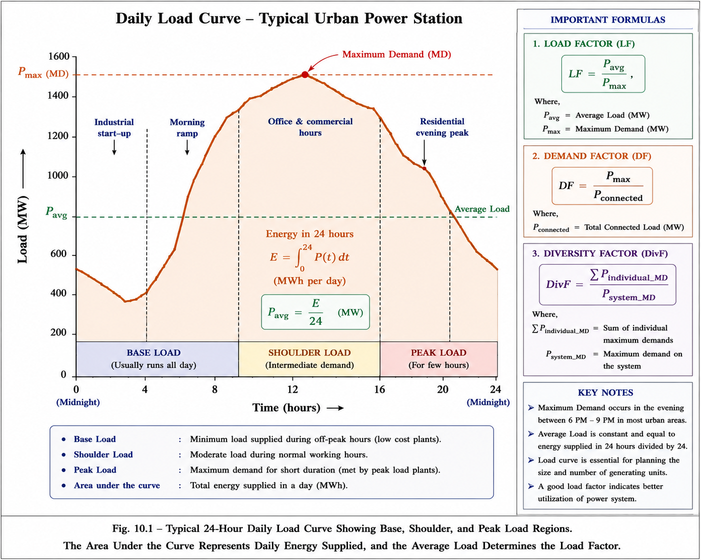
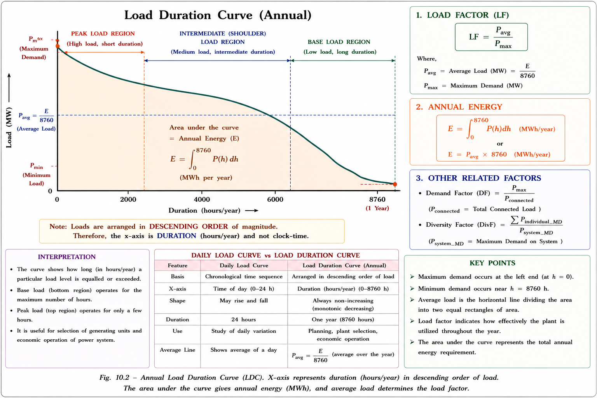
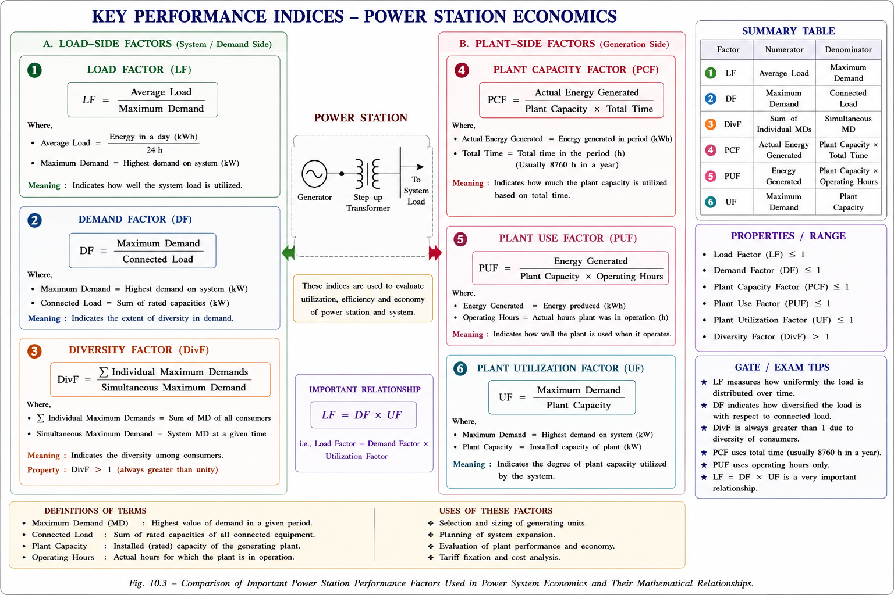
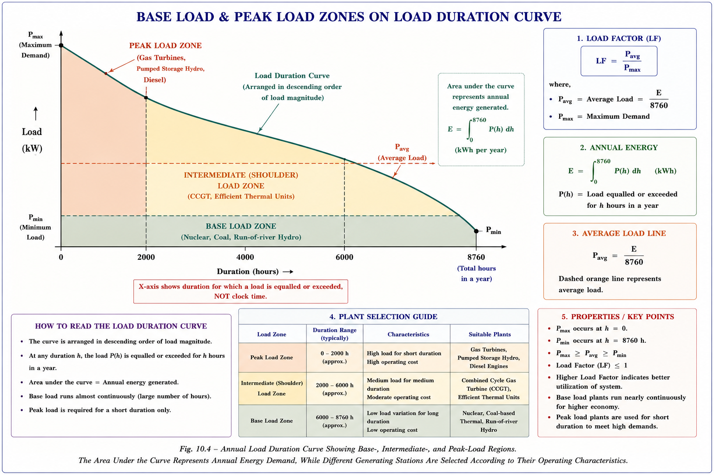
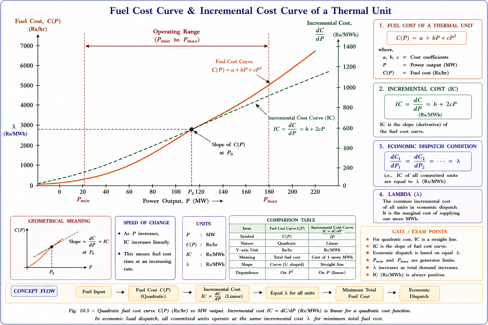
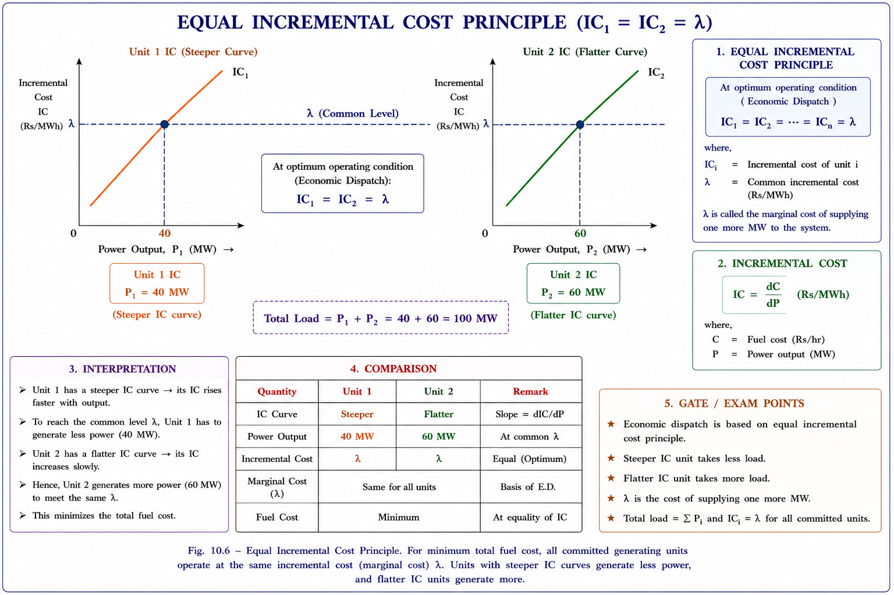
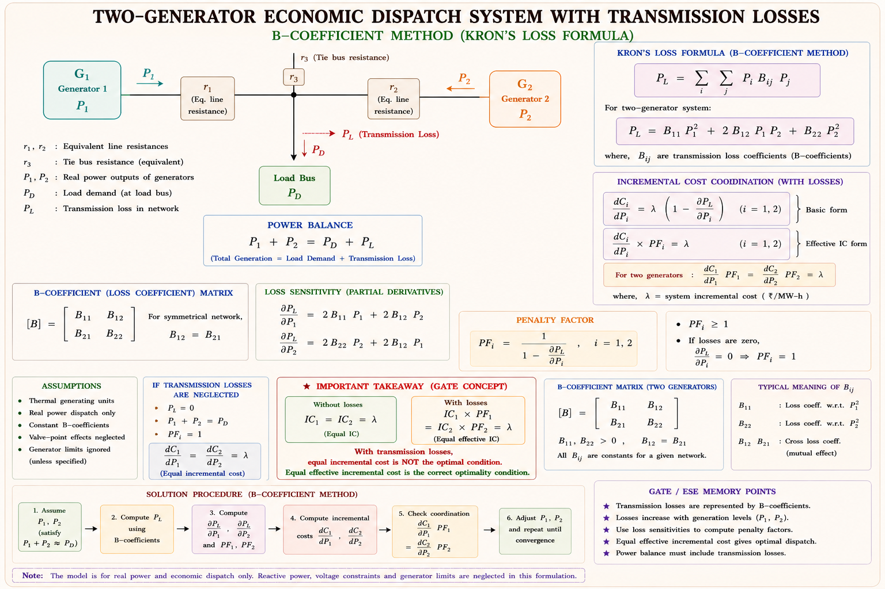

Load curves, demand factors, economic dispatch, and the mathematics of minimising fuel cost — the complete conceptual and numerical guide for GATE EE, IES, and PSU aspirants.
Electricity cannot be stored in bulk. Every watt generated that is not consumed is wasted. This creates a unique engineering challenge: how do we match supply to a continuously varying demand — cheaply, reliably, and efficiently? That is precisely what the Economics of Power Generation addresses.
Multiple generators are running in parallel. The system load changes every second. Which generator should supply how much power at any given moment so that the total fuel cost is minimum while meeting the load exactly? This is the Economic Load Dispatch (ELD) problem.
In India, the total installed capacity exceeds 900 GW. Even a 1% improvement in dispatch efficiency saves hundreds of crores of rupees annually in fuel costs. Power system engineers routinely solve ELD problems in real-time Energy Management Systems (EMS) at load dispatch centres.
Imagine a power station feeding a city. At 2 AM, only street lights and some factories are running — demand is low. At 7 AM, offices open and air conditioners come on — demand spikes. A Load Curve is the graphical record of this variation: load in kilowatts plotted against time, in the order in which it occurs (chronologically).[1]

Figure 6.1 — Typical daily load curve showing off-peak, shoulder, and peak demand periods. Area under curve = energy supplied in a day. Green dashed line = average load.
Original diagram by Aarova AI. Concept from Kothari & Nagrath [2].
The area under the load curve = total energy supplied in that period. In kWh, it equals ∫Load · dt. Dividing this area by the number of hours gives the average load.
The Load Duration Curve is a rearrangement of the daily load curve. Instead of plotting load against the actual time it occurred, we plot load in descending order of magnitude — highest loads first, lowest last. It answers the question: "For how many hours in a day does the load exceed a given value?"[1]

Figure 6.2 — Load duration curve. X-axis is not clock-time but duration. Base load occupies the bottom band; peak load occupies the thin upper tip.
Students often confuse the load curve (chronological, tells when the load occurs) with the load duration curve (sorted, tells how long each load level persists). The area under both curves equals the same total energy — only the x-axis interpretation differs.
These are the key performance indices of a power station. Mastering their definitions, formulas, and physical interpretations is essential — GATE regularly tests numericals based on these.[2]
| Factor | Formula | Physical Meaning | GATE Weight |
|---|---|---|---|
| Load Factor | \(\dfrac{\text{Average Load}}{\text{Maximum Demand}}\) | How uniformly the plant is utilised over time. Higher → cheaper per-unit cost. | 🟢 High |
| Demand Factor | \(\dfrac{\text{Maximum Demand}}{\text{Connected Load}}\) | Always ≤ 1. Not all connected equipment runs at once. Determines plant size needed. | 🟢 High |
| Diversity Factor | \(\dfrac{\sum \text{Individual Max Demands}}{\text{Simultaneous Max Demand}}\) | Always ≥ 1. Individual peaks don't coincide. Higher → smaller, cheaper plant needed. | 🟢 High |
| Coincidence Factor | \(\dfrac{1}{\text{Diversity Factor}}\) | Always ≤ 1. Reciprocal of diversity factor. | 🟡 Medium |
| Plant Capacity Factor | \(\dfrac{\text{Actual Energy Produced}}{\text{Max Possible Energy}}\) | Ratio of actual output to theoretical max (plant cap × 8760 hrs). Includes reserve capacity. | 🟢 High |
| Plant Use Factor | \(\dfrac{\text{Station Output (kWh)}}{\text{Plant Capacity × Hours in Use}}\) | Similar to capacity factor but uses actual operating hours, not total hours. | 🟡 Medium |
| Plant Utilisation Factor | \(\dfrac{\text{Maximum Demand}}{\text{Plant Capacity}}\) | What fraction of installed capacity is actually demanded at peak. Always ≤ 1. | 🟡 Medium |
| Operation (Service) Factor | \(\dfrac{\text{Service Hours}}{\text{Total Duration}}\) | Fraction of time the plant is in service over a given period (usually a year). | 🔴 Low |
Consider two cities A and B, both with a maximum demand of 100 MW. City A has factories running round the clock (load factor 0.85). City B has mostly residential load — lights and ACs peak in the evening but are off at night (load factor 0.40). City A needs a smaller, cheaper plant for the same maximum demand because it generates more kWh per MW of installed capacity. This is why load factor is called the breathing space indicator of a utility.
Suppose a feeder serves three consumers: Industrial (max demand 1500 kW at 10 AM), Commercial (750 kW at 6 PM), and Residential (450 kW at 9 PM). The sum of individual max demands = 2700 kW. But the simultaneous maximum demand on the station is only 2500 kW because their peaks don't coincide. Diversity factor = 2700/2500 = 1.08.[2]
• Higher load factor → lower cost per unit generated (fixed costs spread over more kWh).
• Higher diversity factor → smaller plant size needed → lower capital cost.
• Reserve Capacity = Plant Capacity − Maximum Demand.
• Coincidence Factor = 1 / Diversity Factor (always < 1).

Figure 6.3 — Mind map of all key economic factors. Left side = load-side factors. Right side = plant-side factors.
From the load duration curve, we can identify two distinct regions of load that require different types of generating stations to serve them economically.[3]

Figure 6.4 — Base load (teal shaded, bottom band) and peak load (orange shaded, upper region) on the annual load duration curve. The dotted orange line is the base load limit.
Steam stations are unique — they can operate both as base load and peak load stations, with load factors varying from 40% to 80%, depending on co-ordination requirements with other station types in the system.
| Type | Status | Definition |
|---|---|---|
| Firm Power | Always Available | Power always intended to be available, regardless of outages. |
| Cold Reserve | Available, Not Running | Generating capacity available for service but currently not in operation. |
| Hot Reserve | Running, Not Serving | Capacity in operation but not connected to load (synchronized, unloaded). |
| Spinning Reserve | Connected, Ready | Capacity connected to bus and ready to take load instantly. Most valuable reserve. |
The Economic Load Dispatch (ELD) problem asks: given N thermal generating units running in parallel, how should the total system load PD be shared among them so that the total fuel cost is minimum?[2]
Unit Commitment Problem: Decide which generating units to turn on
(commit) and which to keep off during each hour of the day, given predicted load and reserve
requirements.
Economic Dispatch Problem: Given that certain units are already on-line,
distribute the load among those running units to minimise total fuel cost from minute
to minute.
The relationship between fuel cost and power output is empirically modelled as a quadratic function. This is because turbine efficiency peaks at a certain load level — below and above that point, more fuel is burned per MW of output.[2]
where: \(P_i\) = power output of ith unit (MW), \(a_i, b_i, c_i\) = cost coefficients of ith unit, units of Ci = Rs/hr

Figure 6.5 — Quadratic fuel cost curve C(P) in Rs/hr vs MW output. The derivative dC/dP (incremental cost, IC) is a straight line for a quadratic cost function.
The incremental fuel cost (IC) is the rate of change of fuel cost with respect to power output — it tells us how much additional fuel cost is incurred for each additional megawatt of output:[2]
In this simplified case, we assume the transmission lines are lossless (or the load is located directly at the generators). The objective is to minimise total fuel cost subject to the load balance constraint.
Using the Lagrangian multiplier method, we form the augmented cost function:
For minimum cost dispatch neglecting losses, the incremental fuel costs of all generating units must be equal: $$\frac{dC_1}{dP_1} = \frac{dC_2}{dP_2} = \cdots = \frac{dC_N}{dP_N} = \lambda$$ This λ is called the system lambda or incremental cost of received power.

Figure 6.6 — Both units loaded to the same incremental cost λ. Unit 1 (steeper IC curve) takes less load (40 MW); Unit 2 (flatter IC) takes more load (60 MW). Total = 100 MW.
If solving IC₁ = IC₂ gives a P value outside [Pmin, Pmax] for any unit, clamp that unit at its violated limit and re-solve the equal-IC condition for the remaining units. This is the clamping procedure.
In reality, power transmitted over long lines suffers resistive losses. The load balance constraint now becomes \(\sum P_i = P_D + P_L\), where \(P_L\) is the total transmission line loss. A generator farther from the load must be penalised even if its fuel cost is low, because its power causes more line losses.[2]
Li penalises generator i for the transmission losses its power causes. A generator near the load has Li ≈ 1 (no penalty). A generator far from the load has Li > 1 (penalised). The term ∂PL/∂Pi is called the Incremental Transmission Loss (ITL) of unit i.
The Kron transmission loss formula expresses network losses as a quadratic function of generator outputs using B-coefficients (also called B-loss coefficients or penalty coefficients):
When the load PD is connected directly at the terminals of Generator 1, with R1 = 0, R2 ≠ 0, R3 = 0:
Generator 1 is right next to the load — every MW it generates reaches the load without loss. So its penalty factor L₁ = 1 (no penalty). Generator 2 must push current through line resistance R₂ to reach the load — it is penalised, so L₂ > 1.

Figure 6.7 — Two-bus power system for B-coefficient analysis. R₁, R₂ are generator connection resistances; R₃ is tie bus resistance at load point PD.
Apply the co-ordination equation: IC₁ = IC₂ (losses neglected)
Always check if the unconstrained solution violates Pmin/Pmax. If it does, fix the violated unit at its limit and re-optimise the rest. This clamping procedure appears frequently in GATE numericals.
GATE typically tests ELD in three ways: (1) Direct numerical — find P₁, P₂ given IC equations and total load. (2) Conceptual — identify the co-ordination equation condition. (3) B-coefficient problems — calculate penalty factor or loss given B-values. The equal incremental cost condition is the most tested concept.
Two generators: IC₁ = 0.4P₁ + 30, IC₂ = 0.3P₂ + 20 (Rs/MWhr). For λ = 120 Rs/MWhr, find P₁, P₂ and total demand PD.
The maximum demand of a hydro station is 200 MW and the annual load factor is 60%. Calculate the total electrical energy generated per year.
The diversity factor of a power system is always greater than unity. This is because:
Individual peaks occur at different times of day — the industrial factory peaks at 10 AM, offices at 2 PM, residential at 9 PM. They never all peak simultaneously, so their sum always exceeds the actual simultaneous peak.
Incremental fuel costs: IC₁ = 0.12P₁ + 16, IC₂ = 0.2P₂ + 24, IC₃ = 0.15P₃ + 18 Rs/MWhr. λ = 30 Rs/MWhr. Find generation schedule.
Average Load / Max Demand = Load factor · Load factor ↑ →
cheaper power
Diversity Factor ≥ 1 · Demand factor ≤ 1
Coincidence factor = 1/Diversity (always ≤ 1)
Plant capacity factor uses 8760 hours; Plant use factor uses actual hours in
operation
For IC₁ = a₁P₁ + b₁ = λ, directly solve: P₁ = (λ − b₁)/a₁. Apply to all units, sum = PD. If any Pi violates limits, fix it and reduce PD accordingly. Repeat.
Chronological load vs time. Area = energy. Daily avg = kWh/24. Annual uses 8760 hrs. Load duration curve = sorted (descending) version.
Load Factor = \(\text{Avg}/\text{MD} \leq 1\). Demand Factor = \(\text{MD}/\text{CL} \leq 1\). Diversity Factor \(\geq 1\). Coincidence = \(1/\text{DF} \leq 1\). Higher LF \(\rightarrow\) lower unit cost.
Base: nuclear, large hydro, coal (high LF \(> 80\%\)). Peak: pumped-hydro, gas turbines (fast start). Steam: dual role, LF 40–80%.
Minimise \(\sum C_i(P_i)\). Condition: \(dC_1/dP_1 = dC_2/dP_2 = \dots = \lambda\). Solve: \(P_i = (\lambda - b_i)/a_i\). Check \(P_{min}/P_{max}\). Clamp if violated.
\(L \cdot IC = \lambda\). \(L_i = 1/(1 - \partial P_L/\partial P_i)\). Kron: \(P_L = \sum\sum P_i B_{ij} P_j\). Load at plant \(i \rightarrow L_i = 1\). Load away \(\rightarrow L_i > 1\).
Plant Cap Factor = Actual energy / (Capacity \(\times\) 8760). Plant Use Factor = Output / (Cap \(\times\) Op.hrs). Util. Factor = MD / Plant Cap.
| Topic | Probability | Type | Tip |
|---|---|---|---|
| Economic Load Dispatch (equal IC) | 🟢 Very High | Numerical | Practice IC = λ for 2 and 3 units with limits. |
| Load Factor / Demand Factor | 🟢 Very High | Numerical | Know all 8 factor formulas cold. |
| Diversity Factor | 🟢 High | Numerical + MCQ | Remember: sum of individual max demands / simultaneous. |
| B-Coefficients / Penalty Factor | 🟡 Medium | Conceptual + Numerical | Know special cases: load at plant 1 vs plant 2. |
| Base Load vs Peak Load | 🟡 Medium | Conceptual MCQ | Nuclear = base. Gas turbines = peak. Steam = both. |
| Reserve Types (spinning etc.) | 🔴 Low | MCQ | Spinning reserve = connected to bus, ready to take load. |
Type a question or click a suggestion chip below. Get instant step-by-step answers from your AI Power Systems tutor.
All technical content is derived from the following standard textbooks and learning resources. All explanations, derivations, diagrams, and examples are original to Aarova AI.